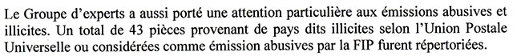
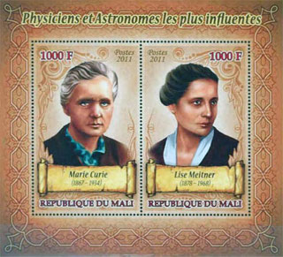
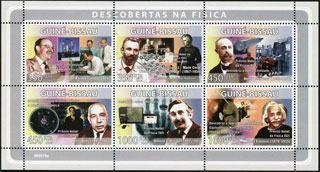
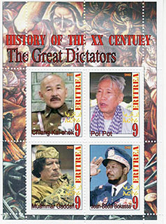
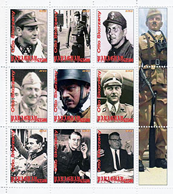
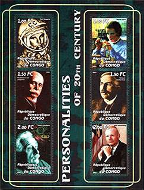

FIP - AGAINST THE PROHIBITED STAMP ISSUES
FIP - FIGHT AGAINST ILLEGAL AND ABUSIVE ISSUES IN 2014
Introduction
Victor Manta, PWO, AIJP
For many years the International Philatelic Federation (FIP) didn't get involved in the fight against the abusive and illegal stamp issues that flooded and continue to flood the international philatelic markets.
This situation is about to change thanks to the determined actions of our friend, member of the Philatelic Webmasters Organization (PWO), Richard Gratton from Canada. Richard is the current Secretary of the Fight against Fakes and Forgeries Commission of the Fédération Internationale de Philatélie (FIP).
In a deeply researched presentation at the Salon “Planète Timbres”, Paris, June 2014, Richard defined the terms for the evils that dominate the word of stamp production and distribution, gave numerous examples (with illustrations) and drew conclusions referring to the (non)acceptance of certain stamps at future FIP exhibitions.
I would like to underline that, as far as I know, it is for the first time in the last 10 - 15 years that an important stamp-related international organization like FIP denounces countries that issue abusive stamps, by refusing to accept an overwhelming part of their output in its exhibition. We know that such stamps are usually managed/distributed and often even sold directly to stamp collectors by external agents like IGPC (see in the table below Grenada , Saint Vincent & Grenadines, etc) and Stamperija (Burundi, Guinea, etc - a direct seller through its website). On this site we often denounced these stamps in the past, categorizing them as excessive postal stamps.
Please note that Richard's activity in Paris was focused not only on the future! In a private e-mail Richard wrote to me that at Paris stamp exhibition they identified and reported 43 prohibited stamps that were discovered in collections sent to the organizers. See below an excerpt from the Report of the Experts Group of the FIP that substantiates these assertions:

You can download the original presentation (in French) from the Web site of the Fight against Fakes and Forgeries Commission of the Fédération Internationale de Philatélie (FIP).
Note: all images on this page were taken from Richard Gratton's presentation.
Prohibited Stamps
Abusive & Illegal Philatelic Issues
Richard Gratton, FRPSC, UBI
Secretary of the Fight Against Fakes and Forgeries Commission of the Fédération Internationale de Philatélie (FIP)
Planète Timbres – Paris , 14 to 22 June 2014(Excerpts)
1. Definitions
g) Prohibited issues- Abusive issues
- Illegal issues
g) Prohibited issues in exhibitions sponsored by the FIP
The issues prohibited by FIP represent a combination of abusive and illegal issues.- Prohibited issues are those that do not follow the Code of Ethics of the UPU and the recommendation of the 1976 UPU Congress in Philadelphia.
- Illegal issues are those that are not issued by legitimate postal administrations.
4a . Abusive issues - definition
- Prohibited issues are those that do not comply with the Code of philatelic ethics, accepted by the member countries of the Universal Postal Union (UPU) , as well as with the decision of the FIP from 1976.
- This code was introduced in 2008 and was approved by all member countries of the UPU.
- Some stamps and sheets do not comply with this code are however issued legally by some postal administrations!- They are not sold by the national philatelic services but by agencies or private companies often located outside the country.
- They do not correspond to the internal needs of the country for postal traffic and are often not even on sale in the issuing countries!
- However, they have a legal franking power.
Some countries that issue Abusive Stamps
CENTRAL AFRICA4b . The illegal stamps - definition (and comments)

Illegal stamps and souvenir sheets are those currently reported by the UPU on its website and in its circulars.
The UPU manages since 2002 the WNS (World Numbering System)See the UPU website www.wnsstamps.post
Unfortunately, this system is not working properly because several countries have ceased to participate and / or to report illegal stamps and sheets. The site is outdated and certainly does not show all legal issues.
It is very difficult for the vast majority of collectors to find what they need!

List of countries for which we currently find Illegal Stamps
5. Issues prohibited at FIP exhibitions

Combination of illegal stamps and abusive issues.
These issues are mostly found in national thematic collections presented in the youth class.The national judges are unfortunately not always aware of all the so-called illegal and abusive issues.
A particular attention will be given to this serious problem in the years to come.
Specific training will be offered to all philatelic federations in the world and to members of the FIP .
Adequate information will also be available on the website of the Fight against Fakes and Forgeries Commission of the Fédération Internationale de Philatélie (FIP).

6. How to recognize the prohibited ?
Carefully examine any stamp BEFORE purchase.Make sure that:
The country's name is spelled correctly.
The currency unit is the proper one.
The nominal value corresponds to that of the issuing country !
The language used is the right one! Several products are intended for English-speaking clients .
The subject may be representative of the country or have a logical link!
The catalogs list occasionally the illegal.
Recognize the merchants that sell them.
Countries that are politically unstable are at high risk!
Countries that do survive financially through philately too!!!!
There are so many illegal stamps and abusive issues that it is impossible to make a complete list and it is even less to illustrate them .
Do your research BEFORE you buy!
Links to related articles published on this site:
- WNS Circulars are not reliable
- WADP, WNS and the Illegal Postal Stamps. Balance Sheet Ten Years Later
- What is WNS Good For?
- No Help from the UPU
- Nigerian Stamp Sentinel
- Ten Lost WNS Years
|